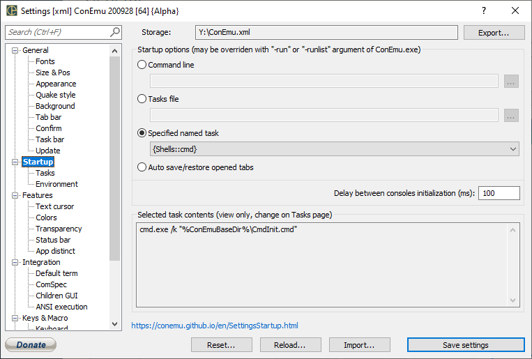

Settings: Startup

Startup options (may be overrided with "/cmd" or "/cmdlist" argument of ConEmu.exe)
- Command line Starts ConEmu with single tab opened
- Tasks file Starts ConEmu with several (one or more) tabs, commands located in specified text file
- Specified named task Starts ConEmu with several (one or more) tabs, commands located in ConEmu Settings, Tasks page
- Auto save/restore opened tabs Auto save/restore (reopen) ConEmu tabs
Far folders also When ‘Auto save/restore opened tabs’ save/restore Far Manager panels folders too
Far editors/viewers also When ‘Auto save/restore opened tabs’ save/restore Far Manager editors/viewers too
Selected task contents (view only, change on Tasks page)
Commands (application, arguments, "-new_console" params). Command delimiter - empty line Each command creates tab in ConEmu when group started Mark active console tab with '>' sign. Start console 'As Administrator' with '*' sign Commands (application, arguments, ‘-new_console’) Delimit commands with empty lines Each command creates tab or pane on group start Mark active console tab with '>' sign Start console 'As Admin' with '*' sign